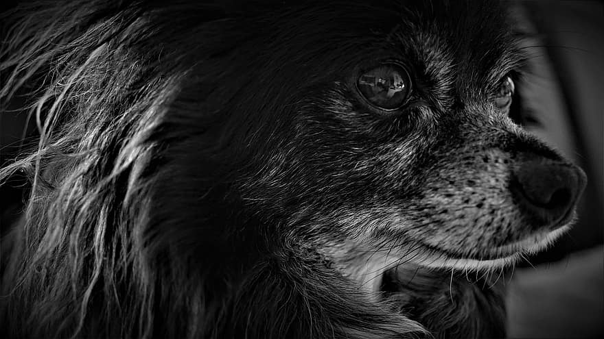
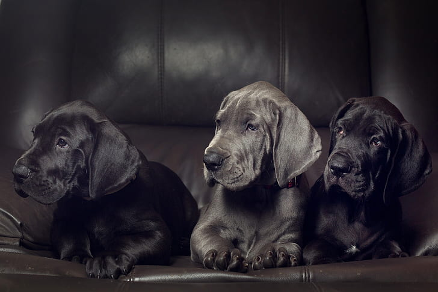

K�pekler do�duklar� andan itibaren
insanlara kar�� sevgi duyarlar. Bu �ekilde d�nyaya gelen tek hayvan t�r� k�pektir.
Bu nedenle siz k�peklere yak�nl�k g�stermeseniz de onlar sizi �oktan benimsemi�tir. Yeni
ald���n�z k�pe�iniz sahibi oldu�unuzu hissetti�i andan itibaren kokunuzu benimsemi�tir.
Bulundu�u mekanlarda �zellikle sizin e�yalar�n�z�n �zerine uyumay� tercih eder. Sizin kokunuz onu rahatlat�r.
Annesinden yeni ayr�lm�� olan k�pek sahibini en yak�n dostu olarak g�rmektedir. K�peklere davran��lar�n�
kontrol edebilmeleri i�in yard�m etti�iniz taktirde sizin sad�k dostunuz olmamalar� i�in hi� bir neden kalmayacakt�r.
�nsanlarla �ok iyi dosttur k�pekler. Dostluklar�n�n yan�nda, insanlar onlar� pek �ok ama� i�in kullanmaktad�r.
Koku alma duyular� �ok geli�mi�tir. �nsanlardan binlerce kat daha iyi alg�lay�p ay�rt edebilirler kokular�. Bu yetileri sayesinde kay�p insanlar� bulabilirler.
Polis k�pekleri ald�klar� �zel e�itim sayesinde tehlikeli maddeleri bulabilir. Gene e�itimli k�pekler, sakat veya k�r ki�ilerin en iyi dostu ve yard�mc�s�
olabilir.
Ayn� insanlar gibi, k�peklerde e�itim alabilir ve becerilerini geli�tirebilir. Bu e�itimlerin en zoru K9'dur. K9 k�pekleri zor bulunur ve �ok pahal�d�r.
�nsanlarla binlerce y�ld�r beraber ya�ayan k�peklerin en faydal� olduklar� konu herhalde �obanlara yapt�klar� yard�m ve korumad�r.

So�uk iklime sahip b�lgelerde k�pekler, insanlara k�zaklar� �ekerek yard�mc� olur. Bu t�r so�uk iklim k�pekleri bir g�nde 150 km yol katedebilir.

K�peklerin Ya�ad��� yerler: Evcil ve vah�i olarak d�nyan�n hemen hemen her yerinde.
�zellikleri: Keskin koku alma ve i�itme kabiliyetli et�il bir memeli. Sahibine ba�l�l��� ile ��hret bulmu�tur.
�mr�: 15-20 y�l.
�e�itleri: G�r�n�� ve b�y�kl�kleri farkl� 100�den fazla k�pek �rk� vard�r. �oban k�pe�i, av k�pe�i, bulldog, polis k�pe�i, Saint Bernard k�pekleri �nl�d�r.
|